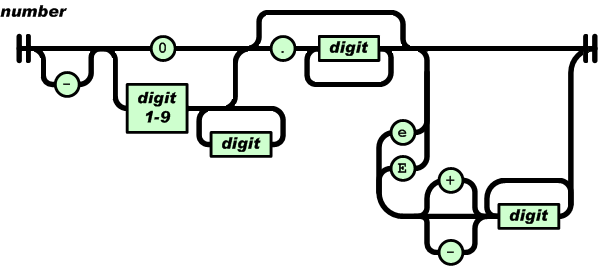

- object
- {}
{ members }
- members
- pair
pair , members
- pair
- string : value
- array
- []
[ elements ]
- elements
- value
value , elements
- value
- string
number
object
array
true
false
null
- string
- ""
" chars "
- chars
- char
char chars
- char
- any-Unicode-character-
except-"-or-\-or-
control-character
\"
\\
\/
\b
\f
\n
\r
\t
\u four-hex-digits
- number
- int
int frac
int exp
int frac exp
- int
- digit
digit1-9 digits
- digit
- digit1-9 digits
- frac
- . digits
- exp
- e digits
- digits
- digit
digit digits
- e
- e
e+
e-
E
E+
E-
JSON (JavaScript Object Notation)は、軽量のデータ交換フォーマットです。人間にとって読み書きが容易で、マシンにとっても簡単にパースや生成を行なえる形式です。
JavaScriptプログラミング言語
（ECMA-262標準第3版 1999年12月）の一部をベースに作られています。
JSONは完全に言語から独立したテキスト形式ですが、C、C++、C#、Java、JavaScript、Perl、Python、その他多くのCファミリーの言語を使用するプログラマにとっては、馴染み深い規約が使われています。これらの性質が、
JSONを理想的なデータ交換言語にしています。
JSONは2つの構造を基にしています。
- 名前/値のペアの集まり。様々な言語で、これはオブジェクト、レコード、構造体、ディクショナリ、ハッシュテーブル、キーのあるリスト、連想配列として実現されています。
- 値の順序付きリスト。ほとんどの言語で、これは配列として実現されています。
これらは普遍的なデータ構造です。つまり実質的に、現代の全てのプログラミング言語が、いずれの形にせよサポートしているということです。プログラミング言語の間で交換可能なデータ形式が、これらの構造に基づいているのは当然です。
JSONでは、以下の形式を持っています。
オブジェクトは、順序付けされない名前/値のペアのセットです。オブジェクトは、{(左の中括弧)で始まり、} (右の中括弧)で終わります。
各名前の後ろには、:(コロン)が付きます。そして、名前/値のペアは、,(コンマ)で区切られます。

配列は、順序付けされた値の集まりです。配列は、[(左の大括弧)で始まり、](右の大括弧)で終わります。値は、，(コンマ)で区切られます。

値は、2重引用符に囲まれた文字列、数値、true、false、null、オブジェクト、配列です。これらの構造は、ネストできます。

文字列は、2重引用符で囲われてバックスラッシュエスケープされたゼロ文字以上のユニコード文字の集まりです。一つの文字も、一つの文字列として表されます。文字列は、CまたはJavaの文字列によく似ています。

数値も、8進数および16進数の形式が使われないことを除いて、CまたはJavaの数値によく似ています。

細かなエンコード表記を除けば、JSONの形式は完全にその言語を表しています。
トークンとトークンの間のどこにでも空白を挿入できます。
- ABAP:
- ActionScript:
- Ada:
- AdvPL:
- ASP:
- AWK:
- Bash:
- BlitzMax:
- C:
- C++:
- C#:
- Ciao:
- Clojure:
- Cobol:
- ColdFusion:
- D:
- Dart:
- Delphi:
- E:
- Erlang:
- Fantom:
- FileMaker:
- Fortran:
- Go:
- Groovy:
- Haskell:
- Java:
-
JavaScript:
- LabVIEW:
- Lisp:
- LiveCode:
- LotusScript:
- LPC:
- Lua:
- M:
- Matlab:
- Net.Data:
- Objective C:
- OCaml:
- OpenLaszlo:
- PascalScript:
- Perl:
- Photoshop:
- PHP:
- PicoLisp:
- Pike:
- PL/SQL:
- PowerShell:
- Prolog:
- Puredata:
- Python:
- R:
- Racket:
- Rebol:
- RPG:
- Ruby:
- Scala:
- Scheme:
- Squeak:
- Symbian:
- Tcl:
- Visual Basic:
- Visual FoxPro: